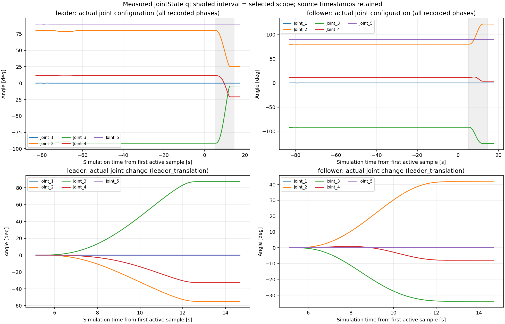
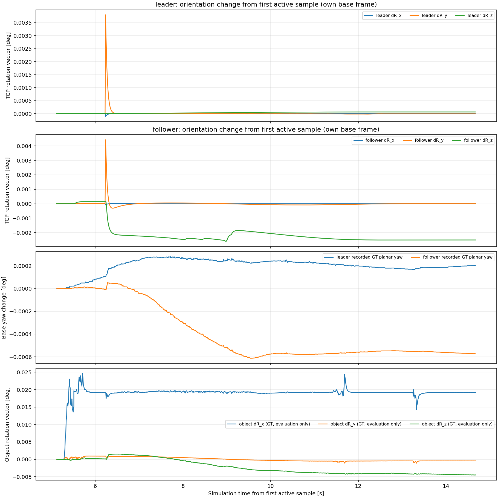
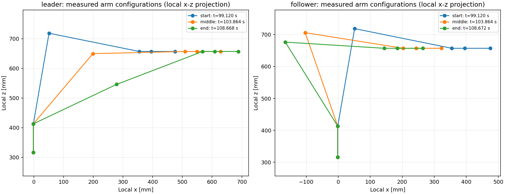

/home/dars5070/ros2_humble_ws/audits/dual_arm_acceleration_20261113/servo_now_gui/trial
関節角は実測値、手先位置・姿勢は保存URDFと実測関節角によるFKです。アーム図は各台車座標のx-z投影です。台車のroll/pitchは記録されていません。


回転ベクトルは初期姿勢からの相対回転です。ノルムが回転角を表します。台車・物体GTは評価用です。
台車・物体CSV
数値・検証結果JSON / 説明と実行コマンド